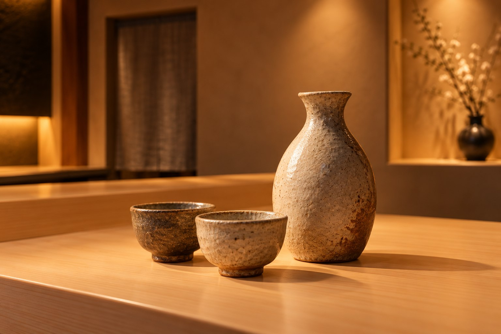

酒と器
料理の余韻に、もうひとつの表情を。

一杯の、ちょうどよさ。
決めすぎず、
その日の気分で。
きりりとした飲み口。
お米のやわらかなふくらみ。
温めて、ゆっくり開く香り。
澄では、銘柄の名前よりも、
いま食べたい一皿や、過ごしたい時間から
一杯を考えます。
お酒を飲まない日にも。
香りを楽しむお茶や、果実の飲み物をどうぞ。
食卓に寄り添う、選び方。
SAKE
日本酒の小さな三杯
軽やか、ふくらみ、余韻。
料理の流れに合わせた三つの味わい。
3,200円税込 / 三杯
TEA & FRUIT
お茶と果実の三杯
焙じ茶の香り、季節の果実、穏やかな余韻。
アルコールを含まない組み合わせ。
1,800円税込 / 三杯
飲み物はコース料金に含まれません。架空の提供内容です。実在の酒蔵・銘柄・作家との関係はありません。
手のひらに、
小さな景色。
土のゆらぎ、釉薬のたまり、口縁の薄さ。
器を選ぶ時間も、食事の楽しみのひとつ。
主張しすぎず、けれど記憶に残る器を添えて。